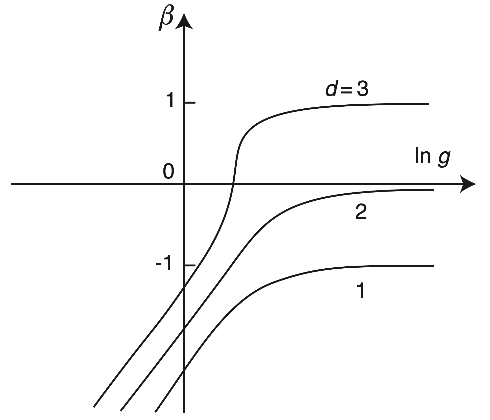

Kronig-Penney模型是一种周期性方势阱[1]。因其与周期性排列的原子核的势场具有形式上的相似性，常被作为学习能带理论的 “toy model”。其势能可以写为
$$V(x)=V(x+a),\ V( x) =\begin{cases}
0,& 0
< x\leq L_{w}\\ U_{0},& L_{w} < x\leq a \end{cases}$$ 其中 $U_0$ 为势垒高度， $a$ 为元胞周期， $L_w=a\times
P_w$ 为势阱宽度， $P_w$ 为势垒间距比例。
作为一个简单例子，我们先来研究一维电子波函数被Kronig- Penney势散射。
固体物理中的Bloch定理解决了完美晶格系统的本征态问题，基于此，人们可以解释金属和绝缘体之间的区别。不过，能带理论考虑的模型过于理想，忽略了电子间的相互作用和晶格本身的缺陷。对于电阻的生成机制，我们不得不考虑电子-声子散射、电子-缺陷散射等机制。
杂质、缺陷浓度较低时，我们可以利用Boltzmann方程等方法来处理，半导体电子论告诉我们，杂质能在导带、价带附近形成的局域态，从而减少带隙，有利于导电。这里事实上点出了杂质、缺陷导致波函数出现局域化的行为。然而，当杂质、缺陷浓度达到上述浓度的10倍，甚至9倍时，产生散射的机制过多；同时，我们实际遇到的体系也大多充满了各种无序态。可见，我们需要更完善的理论来解释波函数的行为，特别是杂质、缺陷等随机势能的引入导致波函数从延展态过渡到局域化的过程。
P. W. Anderson在他1958年的论文中指出随机势能项导致了波函数的局部化，即Anderson 局域化[2]。这种机制成为金属-绝缘体转变（MIT）等领域的重要依据。
考虑Anderson杂质模型
$$
\hat{H} =\sum _{i} \varepsilon _{i}\hat{c}_{i}^{\dagger }\hat{c}_{i} -V\sum _{< ij >}\left(\hat{c}_{i}^{\dagger }\hat{c}_{j} +h.c.\right)
$$
其中$\varepsilon_i$为无序杂质，满足$\langle\varepsilon_i\rangle=0,\ \langle{\varepsilon_i\varepsilon_j}\rangle=W\delta_{ij}$。系统无序程度由 $\frac{W}{V}$ 刻画。
进一步，Anderson指出，对于一维、二维系统，任意小的无序扰动 $\frac{W}{V}$ 都会引起局域化，因此一维和二维系统不存在金属态；对于三维系统，只有无序程度达到一定值时，才会出现局域化，因而三维系统存在金属-绝缘体转变。这可以通过引入如下的Thouless数来描述
$$
g(L)=\frac{2\hbar}{e^2}G(L)
$$
其中 $G(L)=1/R$ 为电导。定义重整化群的标度函数$\beta$
$$
\beta(\ln{g})=\frac{d\ln{g}}{d\ln{L}}
$$
$\beta>0$ 对应金属态，$\beta<0$ 对应绝缘态。考虑$\beta$重整化群流，如下图所示

由此可以看到，只有三维系统存在金属-绝缘体转变。
下面，我们通过在Kronig-Penney势中引入无序扰动，来模拟一维晶格的Anderson局域化。设置势能为
$$
V( x) =\begin{cases}
0, & 0< x\leq L_{w}\\
\text{random}, & L_{w} < x\leq a
\end{cases}
$$